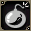
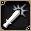

提供情報或編輯請求，請到情報提供公佈欄、編輯公佈欄。
關於技能・魔法
共通攻擊
 沙彈
沙彈
每次使用會消耗1顆炸彈。
單純的遠距離攻擊技能，但沒有技能等級。
威力取決於DEX，不受自己的攻擊屬性或DAM影響。攻擊屬性為土。
弱的敵人不需接敵就能打倒，也有利於吸引目標或削減敵人HP。
在習得等級附近，傷害比不怎麼樣的短劍技能還高。
也有先用蛛網術讓對方動彈不得，再用毒素炸彈＆這個從遠距離 攻擊，不接敵就打倒的連招。
攻擊，不接敵就打倒的連招。 靈巧手指
靈巧手指
只有用這個技能給對象最後一擊時，才有機率偷到加爾德或道具。
用這個技能的效果偷到時，會以綠字標明。
偷取機率大約是20隻中1～2次，金幣的比例較多。
偷到道具的機率極低，很難見到（不過並非完全沒有）。
習得需要名聲等級70，條件高得離譜。
消耗SP高，威力也只有攻擊的程度，所以對上位怪物非常難用。
基本上是只在給最後一擊時使用的技能。在那之前的HP
還是用主要技能等削掉比較好。
另外，技能EXP也只有給最後一擊時才會獲得，所以也很難培養。
要賺技能EXP，最好想辦法多打倒一些比自己弱的對手。
單人時，在設置地雷或南瓜炸彈等之後用來補最後一擊也許不錯。 賭博猛擊
賭博猛擊
每次使用會消耗1顆骰子。
會選出1～6的隨機數字，依數字使出效果不同的攻擊。
指差動作(Ctrl+2)→攻擊動作的雙重動作，所以是難用的技能。
不過擲出6時的傷害令人刮目相看，是值得培養的技能。
即使在技能等級1的階段也有固定傷害的點數，所以運氣好的話連強敵也
能打倒。 短刀、鞭都能使用，裝備鞭時致命會變成3倍。
短刀、鞭都能使用，裝備鞭時致命會變成3倍。
因為SLv制的條件偏低，稍微鍛鍊雙重突刺就能比等級制早很多
學會。
不過，朝向莫名其妙的方向時使用也會消耗骰子，
所以要注意空打。
設置地雷
每次使用會消耗1顆炸彈。
在指定的地點設置炸彈，對通過上方的怪物造成傷害。
經過一定時間會消失。無法給予最後一擊，敵人的HP一定會剩下1。
另外，同伴或自己踩到也會產生傷害，請注意。- 南瓜炸彈
每次使用會消耗1顆炸彈。
不存在技能等級。
召喚南瓜，南瓜前進轉3圈後會爆炸，
對周圍8方向造成取決於DEX的傷害，是個相當超現實的技能。
召喚出來的南瓜可以攻擊，但沒有意義。
前進方向有障礙物的話，軌道會改變。
敵人的HP一定會剩下1。而且不會鎖定主動目標。
因此對於非主動型的怪物，可以先踏實地把HP削到1再狩獵。
因為是遠距離攻擊，狩獵MC3的死亡信使等時也會使用。
現在即使不是對人場合，玩家也會受到傷害，請注意。 
迴身
夾著對手繞到另一側的技能。
使用後會一瞬間變暗。
不像修道士的迴旋攻擊或先知的克羅伊茲那樣能繞到敵人背後，
而是從自己最初站的位置夾著敵人繞到另一側，是個有點特別的站位技能。
在可站位的技能中唯一會升級，所以也能鍛鍊。
運用自如的話，對怪物戰能佔上風。 旋牙粉碎
旋牙粉碎
在盜賊中少見的範圍攻擊技，是火力比破裂突刺或鐵鞭更高的技能。
因為2連發攻擊對象，總傷害凌駕連幻影研磨都不及。
徒手、 短劍、鞭都能使用。出血效果本身不起眼，
短劍、鞭都能使用。出血效果本身不起眼，
但可以大幅提升閃電背刺的威力。
出血與黑玫瑰會重疊。
出血與毒素炸彈不會重疊。
短劍
 刺擊
刺擊
學會迥旋突刺之前的過渡。 剜擊
剜擊
只要使用混合藥水，光靠這個技能就能連招的技能。
不過威力很低。- 雙重刺擊
雖有攻擊力減少(DAM-30)的追加效果，但存在感薄弱的技能。
SLv30可以學會賭博重擊。
不過不需要急著學賭博。
大概在角色等級到70之前學會就剛好。  雙重抓擊
雙重抓擊
學會破裂突刺之前的過渡。
不過，想學賭博的人，雙重突刺和迥旋突刺的連招斷然比較好，所以不學也無妨。
以強度來說雙刺抓擊＞＞雙重突刺＞迥旋突刺，但SP量增加這點實在不好說。 閃電背刺
閃電背刺
高威力長延遲技能。
只能從敵人背面使用，使用後還會產生10秒的等待時間，是難用的招式，
但擁有與之相稱的高威力。對象處於出血狀態時，還會有1.5倍的傷害修正。
與其他前排雙人狩獵等可以取得背面的情況下容易命中，
單人遊玩時則要利用隱身或迴身等來命中。 亂刺
亂刺
只要使用混合藥水，光靠這個技能就能連招的技能。
是短刀盜賊的主力技能。但缺點是SP消耗量意外地多，所以必須充分注意剩餘的SP量。 幻影研磨
幻影研磨
進入德爾克雷維斯後可習得的技能之一。
實裝當初因為延遲為0，性能高到足以改變職業平衡，
但追加了2秒的延遲(後來修正為1.5秒)，變成了一般等級的技能。
即使如此性能依然足夠，所以組進連招裡肯定會提升火力。
在對人戰中，雖然短時間但無法使用魔法的追加效果很亮眼。
 鞭子
鞭子
 鞭擊
鞭擊
最先能學會的鞭技能。致命時會變成3倍。
不過，因為鐵鞭單獨就能連打，在學會鐵鞭之前，也有很多人拿短刀用破裂突刺，
沒有的話就用迥旋突刺、雙重突刺。
因為SLv制的鐵鞭習得條件為SLv40，暈眩鞭擊習得條件為SLv30，
如果已經取得技能捲軸(課金抽獎產出)，鍛鍊鞭擊也是一種選擇。
只要使用混合藥水，光靠這個就能連招。- 鐵鞭
只要使用混合藥水，光靠這個就能連招。
鞭盜賊的主力技能。致命時會變成3倍。  黑玫瑰
黑玫瑰
正面2格為攻擊範圍，成功率取決於DEX，帶有毒(HIT-10)追加效果的技能。
與毒素炸彈會重疊，所以用這兩個可以漂亮地削減怪物的HP。
效果時間雖短，但減少量似乎比毒素炸彈多。
和毒素炸彈一樣會被CON減輕，所以對CON高的對手幾乎無效。
除了毒素炸彈之外，也可以與吟遊詩人使用的瘟疫之歌等其他毒系重疊施放。
另外，提升SLv只會提高命中率與威力，並不會提高效果發生率。- 暈眩鞭擊
正面2格為攻擊範圍，成功率取決於DEX，帶有暈眩追加效果的技能。
持續時間也長，光用這個和主要技能，有些怪物幾乎可以毫髮無傷地打倒。 (例:火山的d系 部分雪魔系等)
(例:火山的d系 部分雪魔系等)
相反也有完全無效的敵人。 注)暈眩的特效仍會出現。
因為持續時間長，PT時必須先拉到陣營附近再使用，否則在把敵人帶齊之前
會花很多時間，這點要注意。
對人戰中常被禁止。參考(技能/魔法的不具合)
另外，提升SLv只會提高命中率與威力，並不會提高效果發生率。 - 反轉射擊
強制讓正面對象轉向反方向的技能。
敵方怪物有時會後退1格，所以先施放蛛網術再使用比較吉利。
成功率取決於DEX，但也有無效的敵人。
另外也有使敵人的目標脫離的效果，請注意。
利用脫離目標的特性，也可以讓對手怪物幾乎不行動，單方面攻擊。
對擁有特別危險特殊攻擊的怪物尤其重要。
戰鬥輔助
 毒藥
毒藥
使單一對象中毒。
中毒效果期間，也會產生HIT-10的效果。
其實2格以內的怪物，即使沒有直接造成傷害也能吸引目標。
成功率取決於DEX。 喬克豬肉
喬克豬肉
每次使用會消耗1顆炸彈。
使單一對象陷入黑暗狀態。對人戰專用技能。
對怪物沒有效果。只會消耗炸彈而已，所以別用了。
成功率取決於DEX。 胡椒炸彈
胡椒炸彈
每次使用會消耗1顆炸彈。
使單一對象AC+30。
能補足較少的火力，所以成為主要輔助之一。
不只單人，PT時對其他前排全員都有好處，所以非常好用。
成功率取決於DEX。- 毒素
使單一對象陷入猛毒狀態。
比下毒更強力，但使用這個技能時會消耗一顆炸彈。
對CON低且HP高的敵人能發揮絕大效果的技能。
對部分怪物來說，這個的效果比自己的直接攻擊攻擊力更高也不是不可能。
因為會被CON的數值減輕，似乎在CON100左右的線就幾乎沒有效果了。
另外也有大幅降低敵人HIT(HIT-30)效果，是個划算的技能。
成功率取決於DEX。  黑暗迷霧
黑暗迷霧
在自己周圍3格產生看不見的效果區域，進入其中就會被強制陷入黑暗狀態。
異常狀態防具無法防禦，而且效果時間也長。
連續使用等待時間70秒。※2012/11/20現在 技能不會發動 蜘蛛網
蜘蛛網
使對象無法移動的魔法。
主要用於移動時絆住雜魚再甩開。
不過要注意，蛛網術剛中和剛解開的瞬間，敵人的目標有時會脫離。
反過來說，也可以用來讓後排脫離目標。
另外，隱身使用中使用的話，隱身會被解除。
成功率取決於DEX，但也有無效的敵人（特效會出現但仍會移動）。
還有，會抵消魔術師或吟遊詩人的緩慢系技能，請注意（蛛網術發動中
緩慢系不會中）。
※緩慢不只會降低攻擊速度、移動速度，還有降低敵人自動恢復速度的效果，
所以有可使用緩慢的魔術師或吟遊詩人時要注意 尤其魔術師的緩慢MP消耗
很大，除非緊急時最好不要用
對為了讓敵人自相殘殺而施放了混亂的敵人使用，會變得黏不上去，
混亂就這樣時間到結束，所以PT時使用必須格外小心。
善加利用的話，可以把對手絆在遠離PT的地方，用魔法或炸彈等讓對方什麼都不能做，
痛快地圍毆，做出技術性的操作（對迪斯凱帝等有效）。 煙霧彈
煙霧彈
使用後會在一定範圍產生特效，進入有特效的地方就會被強制陷入黑暗狀態。
異常狀態裝備無法防禦。
只有這個炸彈技能是例外，需要名為煙幕彈的道具。
煙幕彈在天上科斯莫福利亞的雜貨店有賣。 突然攻擊
突然攻擊
透明狀態下偷襲。使單一對象中毒。
只有透明狀態才能使用。
恐怕是必中？可用防禦裝備防禦。
被防禦時，透明狀態不會解除。
這個本身的效果幾乎沒有，但會與其他毒系技能重疊。
對人時算是唯一能給予最後一擊的毒。
恢復
 自我治癒
自我治癒
恢復量還算可以。
有時會比想像中消耗更多MP，導致無法施放隱身或疾步系。
如果學會了，先施放魔力恢復術再使用吧。
輔助
 迴避
迴避
自己的AAR+20。
不過，移動速度上升系魔法的效果會被抵消。
效果中無法使用疾步系或速度藥水。
除了單純在打擊敵人時提高迴避的用途之外，
在拉怪狩獵中把敵人引導到PT本陣時也能用。
另外，使用速度模式中無法使用。
一般移動時使用疾步系→戰鬥時用這個
覆蓋提高迴避，這種用法很有效。 風之蜂
風之蜂
自己的移動速度+10%。 魔力恢復術(No.1)
魔力恢復術(No.1)
效果中，每秒MP恢復20。
少數的MP恢復魔法。與吟遊詩人的大海之旋律或大海之歌重疊。
因為MP消耗大，PT時先對自己施放再對其他人施放吧。
對吟遊詩人施放會很受歡迎。
有了這個除了節省MP藥之外，與自我治療連招也能節省HP藥。- 魔力恢復術(No.2)
與No.1相同。標示上的習得不同，但可習得的Lv相同。No.1與No.2也可以兩個都學。  布里茲之蜂
布里茲之蜂
自己的移動速度+25%。
在城內和狩獵場的移動變得非常舒適。
另外，可以解除一次怪物緩慢術（未使用時被施放緩慢的話，
施放這個就能解除，但使用狀態下無法解除）。 隱形
隱形
效果時間中，不會被部分怪物鎖定為目標。
到了上位的狩獵場，會有識破的敵人。
攻擊敵人或被識破的敵人攻擊時會解除。
在地下城移動時想無視敵人安全到達目的地時使用，
這是主要目的。
對有效的對手，也可以用於使用→接近→瞄準背面造成大傷害
這種攻擊性的用途。危急時的暫時避難也可以用。
也可以用來釋放拉太多的敵人(把敵人拉到丟棄的地方後
施放，讓自己脫離目標然後逃跑)。
施放到生效需要幾秒，所以要稍微提早施放。 環境術
環境術
可以解除畫面內角色的隱藏系魔法(隱身・大師隱身・潛行)。
不過，施放在自己身上的隱身無法解除。
成功率似乎固定，所以大致上就是連打。
多虧有這個，可以任意決定潛行的時間。在沒有潛行就危險的地方，
預料自己看不到的地方或自己攻擊中會失效的話，可以先施放一次環境術，
再重新施放潛行。 位移
位移
使用後依序為 轉換A→B→C→一般。
轉換A 攻擊力上升 物理・魔法迴避率下降
轉換B 物理・魔法迴避率上升 物理・魔法防禦力下降
轉換C 物理・魔法防禦力上升 攻擊力・「命中率」下降
重視傷害的話使用A，目的是迴避異常狀態等時使用B。
C在PT中進行輔助或引導怪物等輔佐性行動時有效。 大師隱身
大師隱身
效果時間長的隱身。
只有從隱藏狀態出發的第一次攻擊會附加DAM+50的效果。
當然應該瞄準敵人的背後。- 潛行
也能施放在其他人身上的隱身。
效果時間比一般隱身更長。
到了上位的狩獵場，會有識破的敵人。
在有效的狩獵場對後排的天啟聖職者施放的話，對方就不會被打。
施放者攻擊(包含部分魔法)、受到敵人或同伴的攻擊、或施放環境術時效果就會消失。
對等級高的魔術師或後排先知施放的話，被施放的對象
會變得難以使用攻擊魔法(攻擊就會失效，
也有人在意盜賊要重複操作的麻煩)，請注意。
視情況也有對方攻擊→馬上潛行的策略。
另外，死亡的人被復活時，如果在施放之後
就撿不到掉在地上的錢，所以除了緊急時之外，要等對方撿完掉在地上的錢
再施放。  銳利之眼
銳利之眼
進入德爾克雷維斯後可習得的魔法之一。
自身的HIT+20。
與轉換或迴避不同，是能無缺點地提升自身能力的自我輔助。 疾風步伐
疾風步伐
進入德爾克雷維斯後可習得的魔法之一。
自身的移動速度+30%。
是風疾步伐的上位輔助，持續時間也比較長，操作性提升所以是非常有用的魔法。
另外也是唯一能覆蓋機動搭乘守護的主人加速的疾步系魔法。 幻影之影
幻影之影
進入德爾克雷維斯後可習得的魔法之一。
簡單說是強化版的迴避，
但消耗SP增加＆以習得等級高的程度來說，AAR只提升了5。
不過效果時間變長了，所以陣營狩獵等使用時用這個吧。
反過來利用會抵消加速輔助的缺點，
攻城戰時也能做到以加速狀態到達王座→暗影幻影→發動攻城鎚的絕技。(可以在喜歡的時機使用只能在一般速度下使用的攻城鎚)
特殊
 鑑定
鑑定
可以鑑定未鑑定的道具。
蒂拉諾掉落的技能可從Lv3學會。
技能欄位也算是學了商店賣的和掉落的共2個。 屬性確認
屬性確認
可以看到對象的攻擊屬性、防禦屬性。
組隊的時候，結果也會顯示給其他成員。
以前怪物的防禦屬性不使用這個就不會知道，
現在的規格是怪物名稱前面會顯示屬性，
所以除了對人之外變得不太常用了。- 屬性變更
將對象的防禦屬性變更為自己攻擊屬性的弱點。
無法變更為神聖、暗黑屬性。另外，對原本就是神聖・暗黑屬性的敵人也無法使用。
似乎不管自己角色或對象的狀態，都以約3成的固定機率成功。
魔術師難以付與屬性的高WIS怪物，也能藉由重複使用來變更。  分身
分身
進入德爾克雷維斯後可習得的魔法之一。
天上相關
- 智慧炸彈[善]/智慧炸彈[惡]
對人專用技能。
消耗專用道具智慧/固態炸彈，對對象設置定時炸彈。
爆炸時給予1000的固定傷害，之後一段時間(約20秒)封鎖HP恢復系道具的使用。
設置的定時炸彈到爆炸的時間為1分鐘。 - 智慧拆彈[善]/智慧拆彈[惡]
消耗專用道具智慧/固態工具包，解除智慧/固態炸彈。 - 毒星鏢[善]/毒鏢[惡]
對對象造成傷害並使其中毒的遠距離攻擊技能。
毒造成的傷害很小，但會與黑玫瑰重疊。
持有流星時，會自動消耗並增加傷害。
命中率不取決於DEX而是WIS。
不知哪次維修之後毒的效果幾乎變得沒有意義，也不再與毒素炸彈重疊。作為吸引目標的技能很合適。
※2013年3月現在，毒星鏢與瘟疫之歌、毒星鏢與毒素炸彈會重複施放。 - 致命刺[善]/致命刺[惡]
短劍用攻擊技能。
短刀盜賊最終應該會變成這個招式與幻影研磨的連招。
破裂突刺在這裡退場，但習得條件為善惡91，門檻很高。
除了高威力之外，對人使用時還會發生700傷害*4的追加傷害。
技能鍛鍊與連招指南
首先請熟讀基礎知識，記住基本的事。
首先，想走鞭的人也建議鍛鍊破裂突刺。
(因為為了彌補盜賊的低防禦，有時會裝備盾牌。只用鞭可能會膩。)
認真開始使用鞭，學會鐵鞭之後比較好。
另外，上面的解說也寫過，賭博重擊因為發動需要時間，
賭博重擊發動、攻擊、到再次發動之前可以放入2次技能。
(1)賭博重擊→(2)某技能→(3)某技能的情況，命中敵人的順序是(2)→(1)→(3)，請記在腦海一角。
- 學會突刺(Lv3)～學會迥旋突刺(突刺SLv10 or Lv10)
突刺→攻擊。 - 學會迥旋突刺～學會雙重突刺(迥旋突刺SLv35 or Lv35)
迥旋突刺→迥旋突刺。
用等級制學會比較快。 - 學會雙重突刺～學會雙刺抓擊(迥旋突刺SLv50 or Lv50)
雙重突刺→迥旋突刺。
用等級制學會比較快。 - 學會雙刺抓擊雙重突刺→雙刺抓擊or迥旋突刺。
用等級制學會比較快。
～學會賭博重擊(雙重突刺SLv30 or Lv85)
學會破裂突刺(雙刺抓擊SLv40 or Lv65)or學會鞭擊(Lv60)
賭博重擊→雙刺抓擊or迥旋突刺→雙重突刺。
- 學會破裂突刺～
破裂突刺→破裂突刺。
賭博重擊→破裂突刺→破裂突刺。 - 學會鐵鞭(Lv75)
鐵鞭→鐵鞭。
賭博重擊→鐵鞭→鐵鞭。 - 學會反轉射擊(Lv89)
賭博重擊→反轉射擊→鐵鞭→鐵鞭。
反轉射擊→鐵鞭→鐵鞭。 - 學會迴身(Lv90)
連招沒有變化，但作為站位，攻擊⑤的敵人時，確保1、3、7、9
的位置，就不會被敵人包圍。(請參照下圖)
| １ | ２ | ３ |
| ４ | ⑤ | ６ |
| ７ | ８ | ９ |